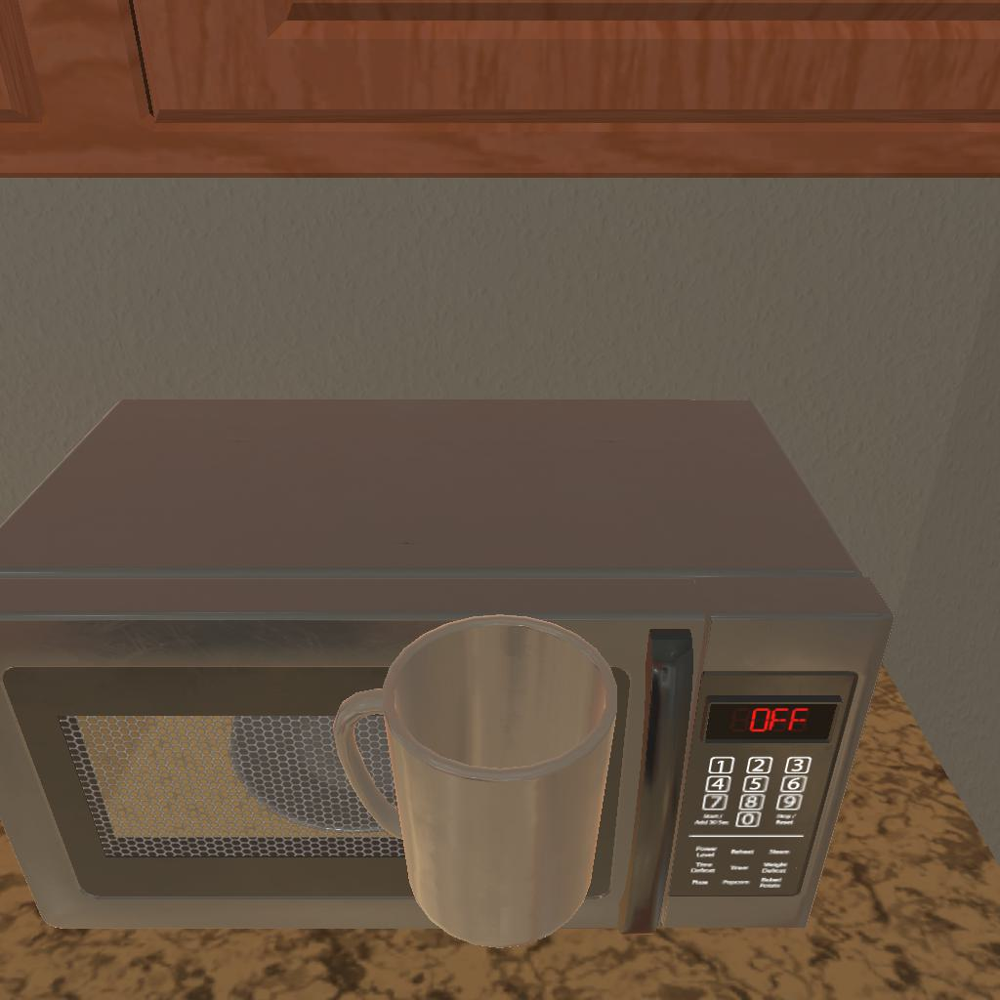
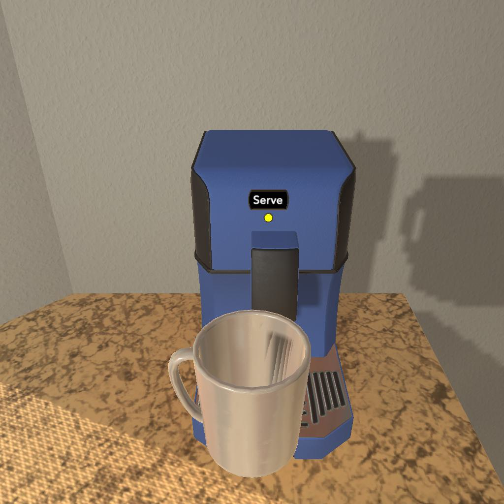
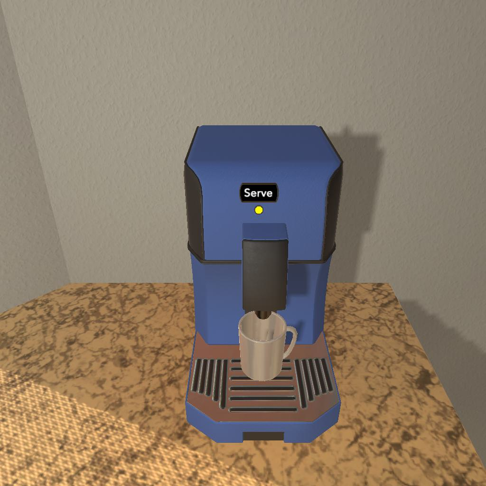

---------------------------------------------------------task: 23---------------------------------------------------------
--------------------------------------------------------------------------------------------------------------------------------------------------------------------
--------------------------------------------------------------------------------------------------------------------------------------------------------------------
Step:--------------------------------------------------------------------------9-------------------------------------------------------------------------------
----------------------------------------
VLM Prompt:
Image1:
Image2:
Image3:
**Instruction**
1. Analyze the provided images to identify all visible household objects and compare the difference between images (e.h. whether the object is opened or not and taken on hand or not), focusing on those relevant to the task description "put a hot mug in coffeemachine."
2. Use the analysis of images and the task hint "The agent must find an object of the desired type, pick it up, go to a microwave, heat the object with the microwave, then find the correct location to place it, and put it down there. The agent does not need to use the microwave button or open the microwave to heat the object, and the agent just needs to do action that is "heat the object with the microwave"." to answer the question: what is the most reasonable action in the choices for the task description "put a hot mug in coffeemachine"?
3. Decide and write the answer using the template: The answer is: (i): , where i is the real number. If there is no desired object in images, search every place based on **Initial Observation** to find the object. And if no one is exactly correct, choose a similar answer.
**Initial Observation**
You are in the middle of a room. Looking quickly around you, you can see cabinet (1-15), fridge (1), countertop (1-4), drawer (1-4), microwave (1), toaster (1), coffeemachine (1), garbagecan (1), sink (1), stoveburner (1-3), sinkbasin (1)
**Answer Choices**
(1): go to cabinet 1
(2): go to cabinet 2
(3): go to cabinet 3
(4): go to fridge 1
(5): go to countertop 1
(6): go to cabinet 4
(7): go to cabinet 5
(8): go to cabinet 6
(9): go to cabinet 7
(10): go to drawer 1
(11): go to drawer 2
(12): go to cabinet 8
(13): go to drawer 3
(14): go to cabinet 9
(15): go to cabinet 10
(16): go to drawer 4
(17): go to cabinet 11
(18): go to toaster 1
(19): go to cabinet 12
(20): go to cabinet 13
(21): go to cabinet 14
(22): go to cabinet 15
(23): go to countertop 2
(24): go to garbagecan 1
(25): go to countertop 3
(26): go to countertop 4
(27): go to sink 1
(28): go to stoveburner 1
(29): go to stoveburner 2
(30): go to stoveburner 3
(31): go to sinkbasin 1
(32): put mug 1 in/on coffeemachine 1
(33): examine mug 1
(34): examine coffeemachine 1
**Answer**
Let's think step by step by following the instructions.
----------------------------------------
----------------------------------------
Original Response:
Firstly, we need to analyze the images provided:
- Image 1 and Image 2 both show a mug placed beside a microwave that is off. There is no difference between these two images; they are identical.
- Image 3 shows a mug placed in front of a coffeemachine, with the "Serve" button illuminated, indicating that the coffeemachine is on or ready to serve.
Now, according to the task description "put a hot mug in coffeemachine," and the given hint that the agent does not need to use the microwave button or open the microwave to heat the object, we can deduce that the agent's task is to take the mug, somehow heat it without explicitly interacting with the microwave, and then put the hot mug in the coffeemachine.
Given the initial observation, we know there is only one coffeemachine and one microwave in the room. The images show that the mug is not yet in the coffeemachine, so the most reasonable action to fulfill the task description would be to take the mug, heat it, and then put it in the coffeemachine.
However, none of the answer choices explicitly state "heat the mug with the microwave" or an action that implies directly heating the mug. Therefore, we have to choose the action that gets us closest to the goal of putting a hot mug in the coffeemachine.
Since the mug is already on the countertop next to the microwave and coffeemachine (as shown in the images), the most reasonable action to choose from the given options, in order to move forward with the task, would be to put the mug in the coffeemachine.
The answer is: (32): put mug 1 in/on coffeemachine 1
----------------------------------------
----------------------------------------
>>> Refine Original VLM Response and Get Pure Action: put mug 1 in/on coffeemachine 1
----------------------------------------
-----------------------------------------------------------------
Running time: 19.040928840637207 seconds
Total Money: 14.593139999999998
-----------------------------------------------------------------
-----------------------------------------------------------------
Text Observation:You put the mug 1 in/on the coffeemachine 1.
-----------------------------------------------------------------
SUCCEED